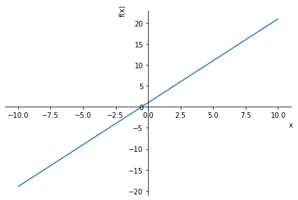
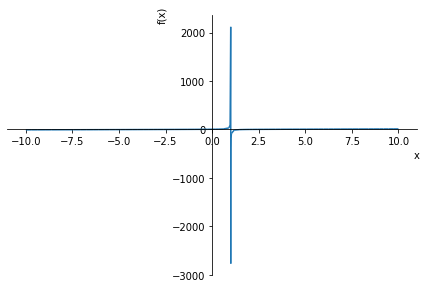
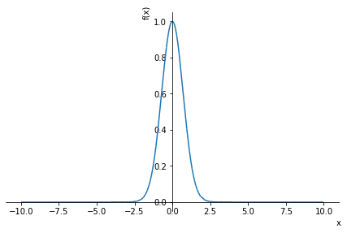
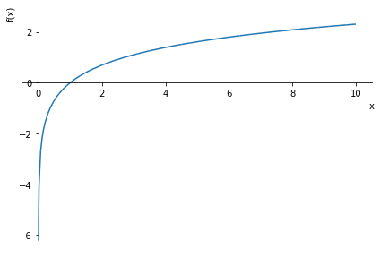
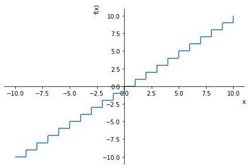
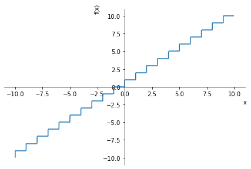
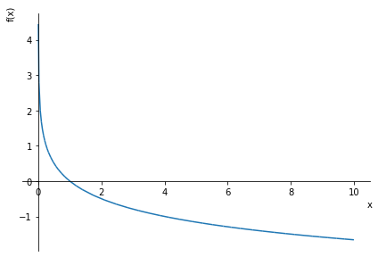
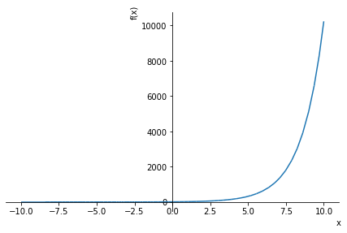

4. Funciones¶
para trabajar con funciones importamos sympy
[1]:
from sympy import *
[2]:
f=2*x+1
---------------------------------------------------------------------------
NameError Traceback (most recent call last)
<ipython-input-2-227710d64f4c> in <module>
----> 1 f=2*x+1
NameError: name 'x' is not defined
Básicamente,el mensaje de error nos dice que la variable “x” no está definida. Esto lo podemos ver en NameError: name 'x' is not defined.
Ahora bien, esto se soluciona declarando x=symbols('x'), como se sigue.
[3]:
x=symbols('x')
[4]:
f=2*x+1
[5]:
f
[5]:
$\displaystyle 2 x + 1$
Pero esta no suele ser una solución muy elegante. Lo ideal sería declarar varias variavibles e ir utilizandolas en la medida que se las requiera.
[6]:
init_session(use_latex=True)
IPython console for SymPy 1.8 (Python 3.8.5-32-bit) (ground types: python)
These commands were executed:
>>> from __future__ import division
>>> from sympy import *
>>> x, y, z, t = symbols('x y z t')
>>> k, m, n = symbols('k m n', integer=True)
>>> f, g, h = symbols('f g h', cls=Function)
>>> init_printing()
Documentation can be found at https://docs.sympy.org/1.8/
[7]:
g=(x**2-4)/(x-1)
[ ]:
g
$\displaystyle \frac{x^{2} - 4}{x - 1}$
[8]:
h=exp(-x**2)
[9]:
h
[9]:
$\displaystyle e^{- x^{2}}$
[10]:
j=log(x)
[11]:
j
[11]:
$\displaystyle \log{\left(x \right)}$
[12]:
h.subs(x,0)
[12]:
$\displaystyle 1$
[13]:
g.subs(x,1)
[13]:
$\displaystyle \tilde{\infty}$
con g.subs(x,1) calculamos el límite cuando \(x\to 1\)
4.1. Plotting Graphs¶
[14]:
from sympy.plotting import plot
[15]:
plot(f)

[15]:
<sympy.plotting.plot.Plot at 0x341c298>
[16]:
plot(g)

[16]:
<sympy.plotting.plot.Plot at 0xb7c7ad8>
[17]:
plot(h)

[17]:
<sympy.plotting.plot.Plot at 0xb844118>
[18]:
plot(j)

[18]:
<sympy.plotting.plot.Plot at 0xb89ea30>
[19]:
z=ceiling(x)
[20]:
z
[20]:
$\displaystyle \left\lceil{x}\right\rceil$
[21]:
w=floor(x)
[22]:
w
[22]:
$\displaystyle \left\lfloor{x}\right\rfloor$
[23]:
w.subs(x,1.5)
[23]:
$\displaystyle 1$
[24]:
z.subs(x,1.5)
[24]:
$\displaystyle 2$
[25]:
plot(w)

[25]:
<sympy.plotting.plot.Plot at 0xb8a6850>
[26]:
plot(z)

[26]:
<sympy.plotting.plot.Plot at 0x6008358>
[ ]:
4.2. Prueba¶
[27]:
y = -1/2*(log(x)/log(2))
[28]:
plot(y)

[28]:
<sympy.plotting.plot.Plot at 0x60608b0>
[29]:
y = 10*2**x
[30]:
y
[30]:
$\displaystyle 10 \cdot 2^{x}$
[31]:
plot(y)

[31]:
<sympy.plotting.plot.Plot at 0x60b8a00>
[ ]: